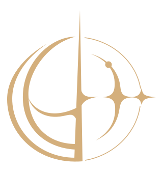
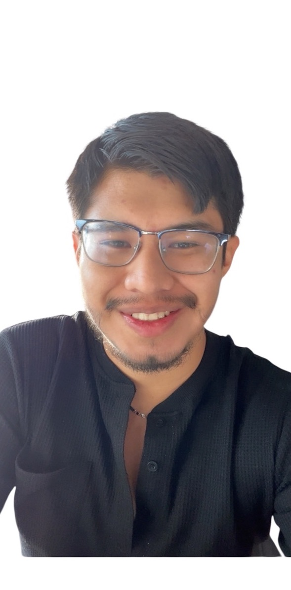

Kairos es un espacio para observar el mundo, intentar comprenderlo, crear tus propias ideas y contar con herramientas para vivir mejor en él.
Libertad · Razonamiento · Acompañamiento.Elegir te corresponde a ti. Nosotros te damos las herramientas.
RESEARCH · LABS · TOOLS · ADVISORY
Kairos nace de una inquietud sencilla: entender mejor el mundo que nos rodea para tomar mejores decisiones dentro de él. Exploremos juntos las ramas de la economía y cómo pueden ayudarnos a experimentar con ideas frescas y a crear herramientas para resolver problemas actuales. Así construimos marcos de pensamiento conectados entre sí, comprendemos mejor el mundo y aprendemos a vivir en él.
No buscamos decirte qué pensar. Queremos ofrecerte información, ideas, evidencias y reflexiones para que construyas tu propio criterio.
Tenemos un futuro brillante, pero muy incierto. Descubramos lo fascinante de las cosas al construir nuestra propia perspectiva.
No veamos el mundo como algo caótico. Veámoslo como algo fascinante que hay que descubrir.
El conocimiento debe hacer libres a las personas.
Observar, cuestionar e investigar antes de actuar y para actuar mejor.
Conocimientos, modelos, herramientas y orientación para decidir mejor, no para sustituir tu decisión.
Y conoceréis la verdad, y la verdad os hará libres. Juan 8:32.
Kairos nació como un espacio personal para compartir ideas sobre economía, políticas públicas, hábitos y meditaciones. También reúne las herramientas que nuestro fundador necesitó para mejorar su vida y hacer del mundo un lugar mejor.
No tenemos todas las respuestas y tampoco queremos hacerte creer que las tenemos. Nos interesa hacer mejores preguntas, conectar ideas y encontrar formas de aplicar lo que aprendemos a problemas reales. Así avanzamos hacia nuestros objetivos, nuestros planes de vida y las metas que nos hayamos propuesto.
Con el tiempo, la intención es construir algo más grande alrededor de estas ideas: una comunidad con las mismas preguntas y los mismos problemas por resolver.

Economista e investigador guatemalteco interesado en economía aplicada, política pública, medio ambiente y toma de decisiones. Fundó Kairos como un espacio para convertir ideas en investigaciones, experimentos y herramientas que otras personas puedan explorar, cuestionar y utilizar.
Economía, laboratorio, herramientas y pensamiento no son categorías aisladas. Son cuatro movimientos de un mismo proceso: observar, experimentar, construir y reflexionar.
Analizar cómo funcionan los sistemas económicos, las políticas, los mercados y los problemas reales utilizando datos, evidencia y contexto.
Explorar EconomíaProbar hipótesis, construir simulaciones, explorar escenarios y llevar ideas más allá de la intuición.
Entrar al LaboratorioTransformar investigaciones y modelos en calculadoras, plantillas, sistemas y recursos utilizables para resolver problemas concretos.
Explorar HerramientasTomar distancia de los resultados, conectar ideas y construir mejores marcos para interpretar decisiones, incertidumbre y comportamiento.
Explorar PensamientoEconomía observa. Laboratorio experimenta. Herramientas construye. Pensamiento reflexiona. Cada respuesta puede convertirse en una nueva pregunta.
Observar · Experimentar · Construir · Reflexionar.
Evidencia sobre crecimiento, desacoplamiento y energía renovable, 2000–2024.
Un experimento con 100,000 hogares sobre focalización, información e incentivos: qué ocurre cuando distintas estrategias reciben el mismo presupuesto y las personas responden a las reglas.
Una reflexión sobre la abundancia de opciones, el costo de elegir y la diferencia entre poder escoger más y sentir que hemos elegido mejor.
Los experimentos de Kairos no tienen por qué terminar en una gráfica. Cuando es posible, publicamos el código, la metodología y los materiales necesarios para explorar los resultados por tu cuenta.
La investigación puede leerse. El laboratorio también puede reproducirse.
Explorar Kairos Labs ↗Scripts en Python y R.
Supuestos, ecuaciones y decisiones de modelado.
Fuentes y archivos reproducibles cuando sus licencias lo permiten.
Observar, experimentar, construir y reflexionar explican qué hace Kairos. Dato, contexto, interpretación e implicación explican cómo analizamos cada pregunta dentro de esas cuatro áreas.
Qué ocurrió realmente.
Qué hay detrás de lo ocurrido.
Qué podemos pensar que significa, y qué sigue siendo incierto.
Qué significa esto para nuestras decisiones, nuestra forma de pensar o nuestra manera de actuar.
Kairos es un proyecto independiente que conecta investigaciones, experimentos, herramientas y marcos de pensamiento. La intención es convertir preguntas reales en información, análisis, modelos y recursos que otras personas puedan replicar o utilizar para resolver un problema en sus vidas.
Kairos es un ecosistema que engloba diferentes perspectivas construidas con mucho cuidado. El conocimiento es infinito, por eso queremos seguir sumando nuevas preguntas, datos y código para formar un camino mejor para el futuro.